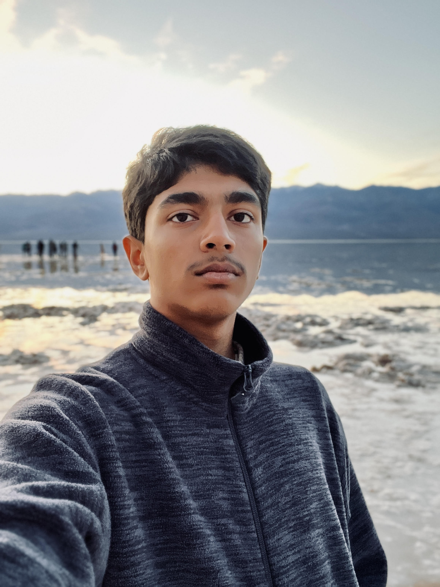

Optimistic, Overt, and Supercalifragilisticexpialidocious!
Who am I? Well, I am an enthusiastic coder by the name of Surya Pai who loves learning more of the vast world of coding, and someone who loves exercising their creativity and developing new programs and websites to make the world a wonderful place to live in! Join me in my pursuit of knowledge, as an aspiring software engineer in an everchanging world!
Always striving to better myself, I aim to become a true coder in the IT field who is adept at checking website protection, working on creating excellet websites, as well as becoming the best there is at coding games and websites. I plan to work everyday to increase my skills in coding with many projects and challenges which I can use to challenge myself everyday and learn new aspects of coding. I enjoy looking at coding from different angles to achieve expertise in things I have never done before. This has always been my choice in life due to my enthusiasm in coding from a young age, and despite lacking talent, I have always conquered many challenges with hard work and determination. coding has always been a fun tool in which I can excercise my creativity and imagination with almost no constrains.
I have always held a knack for finding creative solutions to problems, and filling in blanks when I had a piece of code
that I didn't understand how to make. Finding creative ways around problems is something that is in my blood, and has
always been something I pride myself on. Another factor I pride myself on is being flexible and adaptable, as well as learning
at every moment when I am coding and run into problems.
I have many abilities and achievements, although most of those achievements were accomplished challenges of my own,
I still pride myself on them due to the fact that I did them on my own, with the help of google. I have learned that
I am very good at working with a team, accomplishing a lot and having great organizations skills which I could always use
to increment objectives into smaller goals which I could conquer one by one, resulting in large projects being finished
fast and efficiently. I have created the EHS Reading For Relaxation Club to create the perfect stress free environment for book lovers, and have
done so much more.
In the end, I really want to thank you for reading about me, and hope you will join me on my adventure in the world, and coding. I enjoy coding a lot, and have accomplished a lot so far, with many more milestones to hit and more room to grow. I am always challenging myself and striving to become the best version of me. Thank you for all your time, and join me on my adventure to become a true coder who can tackle on any challenge and revolutionize the world of code with my own skills.